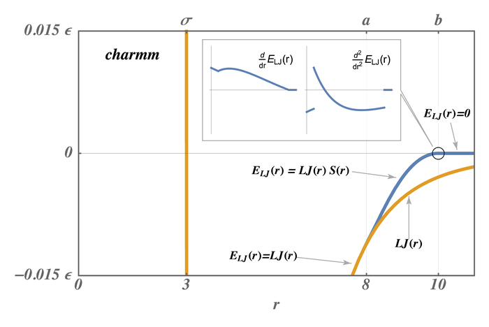
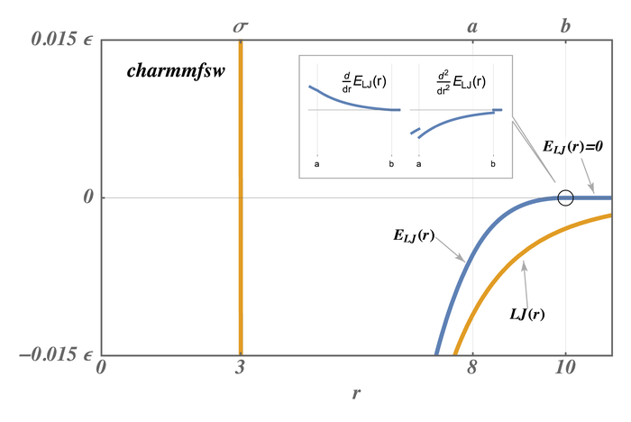

\(\renewcommand{\AA}{\text{Å}}\)
10.4.2. CHARMM, AMBER, COMPASS, ClassII-xe, DREIDING, and OPLS force fields
Here we only discuss formulas implemented in LAMMPS that correspond to formulas commonly used in the CHARMM, AMBER, COMPASS, and DREIDING force fields. Setting coefficients is done either from special sections in an input data file via the read_data command or in the input script with commands like pair_coeff or bond_coeff and so on. See the Tools doc page for additional tools that can use CHARMM, AMBER, or Materials Studio generated files to assign force field coefficients and convert their output into LAMMPS input. LAMMPS input scripts can also be generated by charmm-gui.org.
CHARMM and AMBER
The CHARMM force field (MacKerell) and AMBER force field (Cornell) have potential energy function of the form
The terms are computed by bond styles (relationship between two atoms), angle styles (between 3 atoms) , dihedral/improper styles (between 4 atoms), pair styles (non-covalently bonded pair interactions) and special bonds. The CMAP term (see fix cmap command for details) corrects for pairs of dihedral angles (“Correction MAP”) to significantly improve the structural and dynamic properties of proteins in crystalline and solution environments (Brooks). The AMBER force field does not include the CMAP term.
The interaction styles listed below compute force field formulas that are consistent with common options in CHARMM or AMBER. See each command’s documentation for the formula it computes.
The pair styles compute Lennard Jones (LJ) and Coulombic interactions with additional switching or shifting functions that ramp the energy and/or force smoothly to zero between an inner \((a)\) and outer \((b)\) cutoff. The older styles with charmm (not charmmfsw or charmmfsh) in their name compute the LJ and Coulombic interactions with an energy switching function (esw) \(S(r)\) which ramps the energy smoothly to zero between the inner and outer cutoff. This can cause irregularities in pairwise forces (due to the discontinuous second derivative of energy at the boundaries of the switching region), which in some cases can result in complications in energy minimization and detectable artifacts in MD simulations.

The newer styles with charmmfsw or charmmfsh in their name replace energy switching with force switching (fsw) for LJ interactions and force shifting (fsh) functions for Coulombic interactions (Steinbach)

These styles are used by LAMMPS input scripts generated by https://charmm-gui.org/ (Brooks).
Note
For CHARMM, newer charmmfsw or charmmfsh styles were released in March 2017. We recommend they be used instead of the older charmm styles. See discussion of the differences on the pair charmm and dihedral charmm doc pages.
Note
The TIP3P water model is strongly recommended for use with the CHARMM force field. In fact, “using the SPC model with CHARMM parameters is a bad idea” and “to enable TIP4P style water in CHARMM, you would have to write a new pair style” . LAMMPS input scripts generated by Solution Builder on https://charmm-gui.org use TIP3P molecules for solvation. Any other water model can and probably will lead to false conclusions.
COMPASS
COMPASS is a general force field for atomistic simulation of common organic molecules, inorganic small molecules, and polymers which was developed using ab initio and empirical parameterization techniques (Sun). See the Tools page for the msi2lmp tool for creating LAMMPS template input and data files from BIOVIA’s Materials Studio files. Please note that the msi2lmp tool is very old and largely unmaintained, so it does not support all features of Materials Studio provided force field files, especially additions during the last decade. You should watch the output carefully and compare results, where possible. See (Sun) for a description of the COMPASS force field.
These interaction styles listed below compute force field formulas that are consistent with the COMPASS force field. See each command’s documentation for the formula it computes.
ClassII-xe
Added in version 30Mar2026.
The computationally efficient simulation of condensed-phase materials such as metals, polymers, and composites can be achieved with fixed-bond force fields. Two popular fixed-bond force fields for such materials are COMPASS (Sun) and PCFF (Maple). Both use a Class II-based functional form that incorporates anharmonic vibrational modes via the quartic Taylor-series expansion of the Hamiltonian. In addition, Class II-based force fields add intermolecular coupling via cross-term interactions that also account for more complex vibrational modes. The underlying harmonic bonds and harmonic cross-terms can limit the reliability of the physics, e.g., when calculating mechanical properties. To overcome the harmonic bonding limitations, a Morse bond (Morse) can be used in place of the quartic bond, but this improvement when modeling bond dissociation is limited when the cross-terms remain harmonic. To improve the physicality of the response of the cross-terms that couple bond stretch to other higher-order interactions (angles, dihedrals, and impropers), those respective cross-terms also need to be modified.
The cross-term potentials that model bond stretch coupling to higher-order interactions are similar in functional form to the harmonic bonding potential. Thus, the exponential function that (Morse) derived for converting a harmonic bonding potential to a bonding potential that accommodates larger bond stretches and can model bond dissociation, can also be implemented into the cross-terms. This defines the naming convention for the ClassII-xe functional form, where x refers to cross-term and e refers to an exponential function, and defines the purpose of the ClassII-xe functional form. The purpose is to allow bond dissociation in a ClassII-based force field via a consistent definition of bond dissociation via the Morse bonding potential and the higher-order cross-term coupling potentials. See (Kemppainen) for a description of the ClassII-xe functional form. The interaction styles listed below compute the force field formulas for the ClassII-xe functional form:
Since both COMPASS and PCFF are Class II-based, their parameters can be converted into the ClassII-xe functional form. The conversion from ClassII to ClassII-xe functional form requires reparameterizing the cross-terms, which can be accomplished via the LUNAR tool, for which a link is provided on the Pre/Post processing page. LUNAR can be used to build a model from scratch in either COMPASS or PCFF (using its ‘atom_typing’ and ‘all2lmp’ modules) and then convert that model to COMPASS-xe or PCFF-xe (using its ‘auto_morse_bond_update’ module). To establish a consistent naming convention for the new ClassII-xe functional form when converting from a parent force field, the -xe suffix should be added to the parent force field name (e.g. PCFF vs. PCFF-xe).
The usage of the ClassII-xe functional form can only let a bond
dissociate; however, to disconnect the dissociated bond and remove the
higher-order interactions, other LAMMPS commands are required, such as
fix bond/react or fix bond/break. It was demonstrated that PCFF-xe (without fix
bond/react or fix bond/break)
can model a material up to fracture (Kemppainen), allowing for calculation of mechanical properties
such such as tensile and shear modulus, tensile and shear yield
strength, Poisson’s ratio, etc. However, the simulation may crash after
fracture if bonds beyond than the processor communication cutoff
distance. Thus, post-fracture phenomena cannot be simulated without the
usage of fix bond/react or fix bond/break. Note that using fix bond/break can cause instabilities and crashes because a
discontinuity is introduced to the energy landscape when a bond is
removed. On the other hand, fix bond/react can
relax high-energy configurations via the stabilization keyword,
whereby a small local group of atoms involved in the discontinuity are
integrated with fix nve/limit. LUNAR can also be used to assist with
setting up simulations that include fix bond/react.
DREIDING
DREIDING is a generic force field developed by the Goddard group at Caltech and is useful for predicting structures and dynamics of organic, biological and main-group inorganic molecules. The philosophy in DREIDING is to use general force constants and geometry parameters based on simple hybridization considerations, rather than individual force constants and geometric parameters that depend on the particular combinations of atoms involved in the bond, angle, or torsion terms. DREIDING has an explicit hydrogen bond term to describe interactions involving a hydrogen atom on very electronegative atoms (N, O, F). Unlike CHARMM or AMBER, the DREIDING force field has not been parameterized for considering solvents (like water) and has no rules for assigning (partial) charges. That will seriously limit its accuracy when used for simulating systems where those matter.
See (Mayo) for a description of the DREIDING force field
The interaction styles listed below compute force field formulas that are consistent with the DREIDING force field. See each command’s documentation for the formula it computes.
OPLS
OPLS (Optimized Potentials for Liquid Simulations) is a general force field for atomistic simulation of organic molecules in solvent. It was developed by the Jorgensen group at Purdue University and later at Yale University. Multiple versions of the OPLS parameters exist for united atom representations (OPLS-UA) and for all-atom representations (OPLS-AA).
This force field is based on atom types mapped to specific functional groups in organic and biological molecules. Each atom includes a static, partial atomic charge reflecting the oxidation state of the element derived from its bonded neighbors (Jorgensen) and computed based on increments determined by the atom type of the atoms bonded to it.
The interaction styles listed below compute force field formulas that are fully or in part consistent with the OPLS style force fields. See each command’s documentation for the formula it computes. Some are only compatible with a subset of OPLS interactions.
(MacKerell) MacKerell, Bashford, Bellott, Dunbrack, Evanseck, Field, Fischer, Gao, Guo, Ha, et al (1998). J Phys Chem, 102, 3586 . https://doi.org/10.1021/jp973084f
(Cornell) Cornell, Cieplak, Bayly, Gould, Merz, Ferguson, Spellmeyer, Fox, Caldwell, Kollman (1995). JACS 117, 5179-5197. https://doi.org/10.1021/ja00124a002
(Steinbach) Steinbach, Brooks (1994). J Comput Chem, 15, 667. https://doi.org/10.1002/jcc.540150702
(Brooks) Brooks, et al (2009). J Comput Chem, 30, 1545. https://onlinelibrary.wiley.com/doi/10.1002/jcc.21287
(Sun) Sun (1998). J. Phys. Chem. B, 102, 7338-7364. https://doi.org/10.1021/jp980939v
(Mayo) Mayo, Olfason, Goddard III (1990). J Phys Chem, 94, 8897-8909. https://doi.org/10.1021/j100389a010
(Jorgensen) Jorgensen, Tirado-Rives (1988). J Am Chem Soc, 110, 1657-1666. https://doi.org/10.1021/ja00214a001
(Maple) Maple, Journal of Computational Chemistry, 15, 162-182 (1994). https://doi.org/10.1002/jcc.540150207
(Morse) Morse, Physical review, 34, 57 (1929). https://doi.org/10.1103/PhysRev.34.57
(Kemppainen) Kemppainen, npj Computational Materials 11, 341 (2025). https://doi.org/10.1038/s41524-025-01838-5